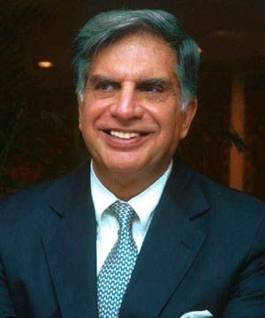

Hello, I have made a Website on Ratan Tata,you can come to know his net worth,his company's and many others.
About Ratan Tata
Ratan Naval Tata (born 28 December 1937) is an Indian industrialist, philanthropist, and a former chairman of Tata Sons.He is the recipient of two of the highest civilian awards of India, the Padma Vibhushan (2008) and Padma Bhushan (2000). He is well known for his business ethics and philanthropy.
His Companies
Significant Tata affiliates include Tata Chemicals, Tata Communications, Tata Consultancy Services, Tata Consumer Products, Tata Elxsi, Tata Motors, Tata Power, Tata Steel, Jamshedpur FC, Tanishq, Voltas, Tata Cliq, Tata Projects Limited, Tata Capital, Titan, Trent, Indian Hotels Company Limited, TajAir, Vistara, Cromā and many more.
His Achievements
Sir Ratan Tata is the recipient of two of the highest civilian awards of India, the Padma Vibhushan (2008) and Padma Bhushan (2000). He is well known for his business ethics and philanthropy. Born in 1937, he is a scion of the Tata family, and great-grandson of Jamsetji Tata, the founder of Tata Group.
His Net worth
His net worth never crosses the $1 billion mark.He has a lot of contribution to the development of India through healthcare facilities, improving the education system and so on.